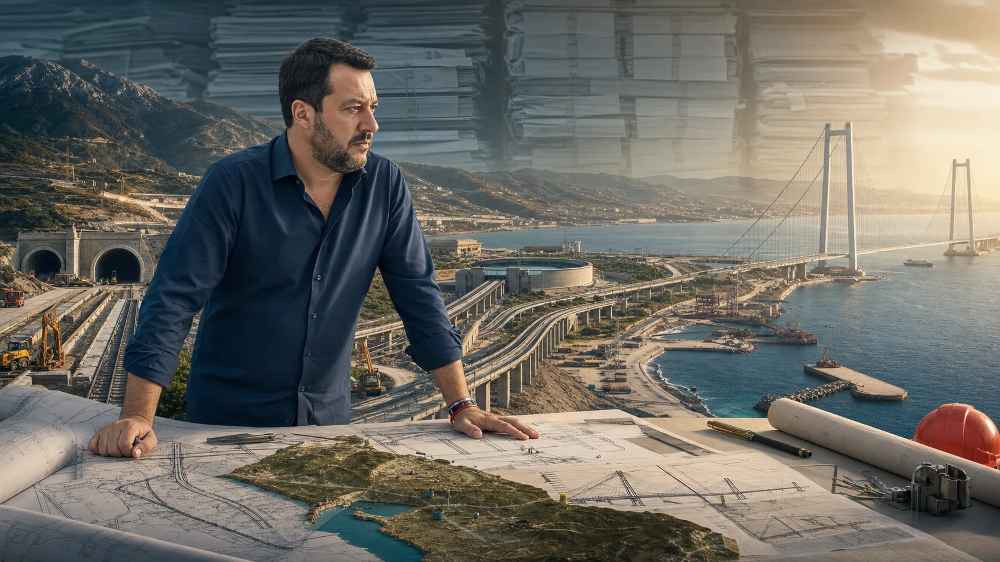

INTRODUZIONE — IL MINISTERO DOVE È FACILE SBAGLIARE ANCHE QUANDO SI LAVORA
Ci sono ministeri nei quali il risultato politico può essere mostrato quasi immediatamente. Una norma entra in vigore, un bonus viene pagato, una tassa viene ridotta, una misura produce un effetto leggibile nel giro di qualche mese. Il Ministero delle Infrastrutture e dei Trasporti non appartiene a questa categoria.
Qui un ministro può firmare oggi un atto i cui effetti saranno visibili tra cinque, dieci o quindici anni. Può ereditare un’opera concepita quando al governo c’erano altre maggioranze, trovarla bloccata da autorizzazioni, ricorsi, problemi geologici o aumenti dei prezzi, lavorarci per anni e poi vederla inaugurata da chi verrà dopo. Può anche accadere il contrario: tagliare il nastro di un’opera costruita quasi interamente dai predecessori e riceverne comunque il merito politico.
È questa la prima maledizione del Ministero delle Infrastrutture e dei Trasporti: la responsabilità politica e la paternità materiale delle opere raramente coincidono.
La seconda è ancora più semplice. Le infrastrutture entrano nella vita quotidiana delle persone proprio quando qualcosa non funziona. Il treno puntuale è normale; quello in ritardo diventa un caso. Il viadotto che regge non fa notizia; quello chiuso blocca una provincia. La strada percorribile è un diritto dato per scontato; il cantiere che restringe una carreggiata diventa immediatamente colpa di qualcuno. Infrastrutture e trasporti sono quindi uno dei pochi settori nei quali il successo tende a diventare invisibile e il problema diventa personale.
Matteo Salvini entra in questo ministero il 22 ottobre 2022. È la prima volta che lo guida. Ha già governato, è già stato ministro dell’Interno e vicepresidente del Consiglio, ma al Ministero delle Infrastrutture e dei Trasporti è un esordiente.
Non entra, però, in una stanza vuota.
Trova centinaia di miliardi di programmazione, grandi opere già avviate, altre ancora ferme sulla carta, scadenze europee già fissate, il Piano nazionale di ripresa e resilienza (PNRR) da attuare, progetti commissariati, cantieri con decenni di storia alle spalle e una quantità di problemi che nessun governo avrebbe potuto risolvere in pochi mesi.
Per capire se Salvini abbia fatto bene al ministero, quindi, non basta contare quante opere vengono inaugurate durante il suo mandato. Bisogna prima capire cosa aveva trovato, a che punto erano i cantieri, quanto tempo era previsto per completarli, quali problemi esistevano già e cosa è realmente cambiato dopo il suo arrivo.
È da qui che parte questa indagine.
LA LEGA DI SALVINI E IL RISCATTO PERSONALE
La prima chiave di lettura è politica prima ancora che amministrativa. La Lega non è più soltanto il partito nel quale Salvini esercita la leadership: nella percezione pubblica è diventata la Lega di Salvini. Il risultato elettorale del partito, l'immagine del segretario e il giudizio sul ministro si sono saldati. Quando uno dei tre perde terreno, gli altri due ne pagano il prezzo.
Questa personalizzazione gli ha dato un potere che pochi leader di partito hanno avuto, ma lo ha anche privato di ogni alibi. Un'opera che avanza lentamente non resta confinata in una relazione tecnica; diventa un giudizio su di lui. Una promessa mancata non colpisce soltanto il ministero; colpisce il marchio politico che ha costruito.
È in questo senso che il lavoro al MIT può essere letto come una battaglia di riscatto personale. Salvini sembra avere compreso che la popolarità costruita sulla provocazione è rapida ma instabile. Le infrastrutture gli offrono un terreno più difficile: produrre risultati che restano. Il carattere continua a spingerlo verso lo scontro e talvolta lo porta ancora a commettere errori di comunicazione, ma l'identificazione totale con la Lega lo obbliga a fare bene. Se il ministero fallisce, non esiste più una Lega separata che possa proteggerlo.
1. IL VECCHIO MODO ITALIANO DI FARE INFRASTRUTTURE
L’Italia ha una lunga storia di grandi opere che finiscono per diventare più famose per i ritardi che per l’utilità.
Il caso simbolo resta la Salerno-Reggio Calabria. L’autostrada originaria viene realizzata tra gli anni Sessanta e Settanta, ma il grande ammodernamento avviato negli anni Novanta diventa a sua volta una storia pluridecennale. Per anni la Salerno-Reggio Calabria entra nel linguaggio comune come sinonimo di cantiere eterno: lotti aperti e chiusi, lavori finanziati in fasi successive, modifiche progettuali, macrolotti, tratti ancora da mettere in sicurezza, scadenze spostate.
Non è necessario attribuire ogni ritardo alla cattiva amministrazione per capire il problema. Il punto è culturale prima ancora che contabile: per decenni l’Italia si è abituata all’idea che una grande infrastruttura potesse richiedere tempi enormemente superiori a quelli dichiarati e che il costo finale potesse allontanarsi parecchio da quello iniziale.
Questo è il vero termine di paragone con cui andrebbe giudicata l’amministrazione contemporanea.
Un grande cantiere che slitta di otto mesi o di un anno non è automaticamente un successo. Ma non è nemmeno la stessa cosa di un’opera che perde dieci, venti o trent’anni. Per capire se il sistema sta migliorando bisogna guardare alla natura del ritardo: il cantiere continua a lavorare? L’avanzamento fisico prosegue? Lo scostamento dipende da problemi tecnici affrontati oppure da un nuovo blocco amministrativo? Il costo cresce perché aumenta il prezzo dei materiali, perché si allarga il progetto oppure perché la progettazione iniziale era sbagliata?
Per decenni in Italia questi elementi sono stati spesso mescolati. Si parlava di “opera da cento milioni diventata da duecento” senza distinguere se fosse raddoppiato il prezzo dello stesso intervento o se nel frattempo fossero stati aggiunti chilometri, gallerie, stazioni o opere complementari.
La prima regola di questo dossier è quindi semplice: non basta dire “ritardo” e non basta dire “aumento dei costi”.
Bisogna capire cosa è successo.
2. 22 OTTOBRE 2022 — IL PUNTO ZERO
Quando Salvini entra al ministero, il quadro infrastrutturale italiano è già enorme.
L’Allegato Infrastrutture al Documento di Economia e Finanza 2022 indicava 279,4 miliardi di euro di interventi prioritari per il sistema nazionale dei trasporti. Di questi, circa 209 miliardi risultavano già coperti da risorse assegnate. La parte più consistente riguardava ferrovie e nodi urbani, seguiti da strade e autostrade, porti, trasporto rapido di massa, aeroporti e ciclovie.
Questa cifra è fondamentale, ma può essere letta male.
Duecentonove miliardi già assegnati non significano duecentonove miliardi di opere pronte. Significano che il governo precedente aveva costruito un programma gigantesco e aveva trovato una parte molto importante delle coperture necessarie.
Il lavoro più difficile, però, in molti casi doveva ancora cominciare.
Nel 2022 una quota rilevante degli interventi era ancora nella fase di progettazione, autorizzazione, gara o aggiudicazione. Molti cantieri dovevano essere aperti, altri erano già attivi ma lontani dal completamento. Il PNRR aggiungeva un elemento ulteriore: non solo denaro, ma scadenze e risultati da raggiungere entro date concordate con l'Unione europea.
Salvini eredita quindi due cose contemporaneamente.
La prima è una dote enorme: fondi, programmazione, riforme, progetti, strumenti commissariali.
La seconda è un obbligo enorme: trasformare quel materiale in opere reali prima che il cronometro scada.
La metafora più corretta non è quella della cassaforte vuota e nemmeno quella del tesoro già disponibile. È una cassaforte piena, ma chiusa da molte serrature. Le chiavi esistono, ma non tutte sono immediatamente riconoscibili. Alcune sono autorizzazioni ambientali. Altre sono conferenze dei servizi, espropri, gare, progettazioni esecutive, contenziosi, varianti, interferenze con infrastrutture esistenti, rincari.
E il cronometro è già acceso.
Questo ridimensiona sia la propaganda favorevole sia quella contraria.
Salvini non può intestarsi come proprie tutte le opere presenti nel programma. Ma non può nemmeno essere trattato come il custode di un piano già pronto, al quale sarebbe bastato aspettare e tagliare nastri.
3. IL FONDO OPERE INDIFFERIBILI: UN’EREDITÀ CHE RACCONTA GIÀ IL PROBLEMA
Uno dei punti più facilmente manipolabili riguarda i costi.
Nel 2022, prima dell’insediamento di Salvini, il governo Draghi aveva già istituito il Fondo per l’avvio delle opere indifferibili. Il fondo viene creato per fronteggiare l’aumento eccezionale dei prezzi dei materiali da costruzione e viene portato a una dotazione di 8,8 miliardi di euro nel periodo 2022-2027.
Questo dato va letto correttamente.
Gli 8,8 miliardi non sono uno «sforamento di Salvini». Non sono nemmeno la prova che il PNRR fosse finanziariamente fuori controllo dopo l'arrivo del nuovo governo. Sono il riconoscimento, già nel 2022, che il quadro economico era cambiato e che i prezzi su cui erano stati costruiti molti progetti non erano più sufficienti.
La fine della fase più dura della pandemia, la crisi delle catene di approvvigionamento, l’aumento dell’energia e poi la guerra in Ucraina avevano modificato il costo reale delle opere.
Il governo successivo ha continuato ad alimentare questo meccanismo. Anche questo, però, non può essere automaticamente classificato come cattiva gestione.
Perché esistono almeno tre fenomeni completamente diversi.
Il primo è l’extracosto puro: stessa opera, stesso perimetro, costa più del previsto.
Il secondo è il rifinanziamento: un'opera resta strategica ma cambia la fonte di copertura perché il PNRR non è più lo strumento adatto o perché il cronoprogramma supera l'orizzonte europeo.
Il terzo è l’ampliamento: si aggiungono lotti, chilometri, stazioni, raccordi, treni, opere complementari.
Mettere tutto nella stessa colonna “costi aumentati” significa non capire cosa sta accadendo.
4. IL VERO METRO: NON CHI HA INVENTATO IL CANTIERE, MA SE IL CANTIERE CAMBIA RITMO
Il problema della paternità politica delle opere è uno dei più ingannevoli.
La Napoli-Bari, il Terzo Valico dei Giovi, la Verona-Vicenza, l’Asti-Cuneo e numerose altre opere non nascono con Salvini. In alcuni casi i lavori erano già iniziati da anni. Sarebbe scorretto attribuirgli la loro creazione.
Ma sarebbe altrettanto superficiale fermarsi qui.
Se un’opera viene ereditata con completamento previsto nel 2030 e, sotto una nuova gestione, la previsione credibile diventa il 2028, il ritmo è cambiato. Se accade il contrario, la gestione perde terreno. Se il calendario resta uguale ma nel frattempo vengono superati ostacoli che avrebbero potuto fermare tutto, anche quello è un risultato.
Il dato utile diventa quindi il delta: tempo previsto, avanzamento fisico, criticità iniziali, criticità risolte.
La Napoli-Bari mostra bene quanto il quadro possa essere complesso.
L’opera è completamente ereditata. I cantieri erano già attivi prima dell’arrivo di Salvini. Oggi alcuni lotti risultano attivati, altri hanno date previste tra il 2028 e il 2030. Questo significa che il cronoprogramma complessivo è slittato rispetto alle aspettative iniziali.
Ma nello stesso periodo vengono attivate tratte reali. Nel febbraio 2026 entra in esercizio il doppio binario Cancello-Frasso Telesino-Dugenta, circa diciotto chilometri di nuova infrastruttura, con galleria e viadotti e l’eliminazione di tredici passaggi a livello. Proseguono parallelamente i lavori sulla Napoli-Cancello e sugli altri lotti.
La conclusione corretta non è “Salvini ha fatto la Napoli-Bari”. Non è nemmeno “la Napoli-Bari è in ritardo quindi Salvini ha fallito”.
La conclusione è che un grande progetto ereditato continua a produrre infrastruttura reale, ma alcune parti richiederanno più tempo di quanto previsto in origine.
Poi bisogna capire perché.
Lo stesso vale per il Terzo Valico dei Giovi.
Nel 2026 gli scavi risultano arrivati a circa il 96 per cento. Restano gli ultimi tratti, mentre tutti i fronti continuano a lavorare. Il cronoprogramma è scivolato rispetto alle vecchie previsioni, ma le cause documentate comprendono condizioni geologiche complesse, presenza di gas e amianto, problemi che richiedono tecnologie e procedure particolari.
Questo non assolve automaticamente il ministero. Ma cambia la natura del ritardo.
Un cantiere bloccato perché nessuno decide non è la stessa cosa di un cantiere che continua a scavare e incontra una geologia più difficile del previsto.
È qui che il confronto con il vecchio modello italiano diventa importante: non chiedersi se esista uno scostamento, ma se lo scostamento stia diventando una nuova incompiuta.
5. QUANDO IL MINISTERO INTERVIENE DAVVERO: TIRANO E IL PROBLEMA DELLE OPERE DA SALVARE
La Variante di Tirano è un caso più utile per misurare direttamente l’azione del ministero.
All’inizio del 2023 i lavori erano già in corso, ma erano emerse criticità tali da rendere possibile uno slittamento oltre le Olimpiadi e Paralimpiadi invernali Milano-Cortina 2026.
Il governo decide di commissariare l’opera. L’obiettivo dichiarato è accelerare e portare la conclusione entro la fine del 2025.
Quel target non viene centrato perfettamente: il primo tratto entra in esercizio nel gennaio 2026 e l’intera variante viene aperta nell’agosto 2026, mentre alcune lavorazioni residue non incidenti sulla fruibilità proseguono successivamente.
È un fallimento?
Se il metro è esclusivamente la data promessa, il target è mancato.
Se il metro è il problema che il ministero aveva trovato, la lettura cambia. L’opera rischiava di andare oltre l’appuntamento olimpico; il commissariamento ne accelera l’esecuzione; una parte entra in servizio prima dell’evento e l’intera infrastruttura diventa percorribile pochi mesi dopo.
È un esempio perfetto di quanto sia sterile la logica binaria successo-fallimento.
Il ministero non realizza l’opera nei tempi perfetti che aveva annunciato, ma evita che un progetto atteso per decenni torni nella palude delle opere italiane senza fine.
Questo tipo di risultato pesa molto più di qualche mese di scostamento.
6. IL PIANO NAZIONALE DI RIPRESA E RESILIENZA: IL CRONOMETRO EUROPEO
A fine 2024 il Ministero delle Infrastrutture e dei Trasporti dichiarava raggiunti tutti i 37 traguardi e obiettivi del Piano Nazionale di Ripresa e Resilienza previsti fino a quel momento.
Dopo le revisioni del Piano, il ministero risulta responsabile di circa 39,85 miliardi di euro e di settanta tra traguardi e obiettivi complessivi da raggiungere entro il 2026.
Questo non dimostra che ogni cantiere stia procedendo perfettamente.
Dimostra però qualcosa di diverso: la macchina amministrativa non risulta aver perso il controllo generale del programma.
La revisione del PNRR è stata necessaria perché alcuni interventi non erano più compatibili con le scadenze o con il nuovo quadro economico. Alcune opere sono state spostate fuori dal perimetro europeo e rifinanziate con strumenti diversi.
Anche qui il linguaggio politico può confondere.
Uscire dal PNRR non significa automaticamente cancellare un'opera. Può significare riconoscere che quell'opera resta strategica ma non può essere completata entro il calendario europeo e deve quindi proseguire con un'altra copertura.
La valutazione del ministro deve considerare proprio questa capacità: perdere l’opera o cambiare il contenitore finanziario senza perderla?
7. IL MINISTRO CHE SI RENDE IMPOPOLARE: IL CODICE DELLA STRADA
Le infrastrutture non sono l’unica fonte di impopolarità del ministero.
Con la legge 177 del 2024, entrata in vigore il 14 dicembre dello stesso anno, Salvini lega direttamente il proprio nome a una revisione importante del Codice della strada.
Qui non esiste un’eredità dietro la quale nascondersi.
La nuova disciplina aumenta la pressione su alcuni comportamenti considerati ad alto rischio: uso del telefono alla guida, guida in stato di ebbrezza, sostanze stupefacenti, sospensione della patente e altre condotte pericolose.
È quasi inevitabile che una riforma di questo tipo renda il ministro meno simpatico a una parte degli automobilisti.
La politica della sicurezza stradale ha infatti una caratteristica ingrata: quando funziona, il risultato è una persona che non muore. Un evento che non accade è molto più difficile da comunicare di una multa ricevuta.
Nei nove mesi successivi all’entrata in vigore della riforma, i dati raccolti da Polizia Stradale e Arma dei Carabinieri mostrano ottanta morti in meno rispetto allo stesso periodo precedente, con un calo del 7,8 per cento dei decessi, del 3,8 per cento dei feriti e del 5,4 per cento degli incidenti mortali.
Questi numeri non consentono di attribuire automaticamente ogni miglioramento alla nuova legge.
Il traffico, il meteo, l’intensità dei controlli, le condizioni delle strade, il comportamento individuale e molti altri fattori influenzano gli incidenti.
Ma il dato osservato va nella direzione dichiarata dalla riforma.
E questo, in un dossier che vuole giudicare il ministro sul lavoro e non sul personaggio, deve essere registrato.
Il dato annuale dell'Istituto nazionale di statistica (Istat) invita però a essere ancora più precisi. Nel 2025 i morti sulle strade sono scesi a 2.868, il 5,3 per cento in meno rispetto al 2024, mentre gli incidenti con lesioni sono aumentati del 2,2 per cento e i feriti dell'1,7 per cento. La diminuzione dei decessi è un risultato reale; il quadro complessivo non consente ancora di attribuirlo interamente al nuovo Codice della strada.
8. SALVINI E FLEXIMAN: L’ALTRA FACCIA DELLA SICUREZZA
La stessa gestione che inasprisce alcune regole interviene però anche su uno dei temi più odiati dagli automobilisti: gli autovelox.
Per anni l’Italia ha convissuto con un sistema nel quale approvazione, omologazione, posizionamento, taratura e utilizzo degli apparecchi hanno prodotto polemiche, ricorsi e giurisprudenza contraddittoria.
Salvini sceglie di occupare politicamente anche questo spazio.
Nel 2026 vengono disattivati 712 apparecchi non in regola su 3.305 censiti sul territorio nazionale. Restano attivi 2.593 dispositivi conformi.
Il significato politico dell’operazione è evidente: l’autovelox non viene abolito. Viene riaffermata l’idea che debba servire alla sicurezza e non possa diventare un sistema opaco di prelievo.
È una linea che Salvini porta avanti anche nella nuova revisione del Codice della strada in preparazione nel 2026: stop all’aumento automatico delle multe legato all’inflazione, maggiore proporzionalità delle sanzioni, tempi più brevi per alcune notifiche, più risorse vincolate alla sicurezza.
La riforma definitiva è ancora in lavorazione e non può essere giudicata come se fosse già legge.
Ma la direzione politica è chiara: severità sui comportamenti pericolosi, meno automatismi percepiti come vessatori.
È una contraddizione solo apparente.
Il ministro che restringe la libertà di chi guida in condizioni pericolose è lo stesso che prova a togliere legittimità alla caricatura dell’automobilista trattato come bancomat.
9. DAL SINGOLO CANTIERE ALLA RETE: QUI CAMBIA IL DISCORSO
Il punto più interessante del mandato di Salvini potrebbe non essere una singola opera.
Potrebbe essere il modo in cui alcune opere iniziano a essere lette insieme.
Il vecchio modello italiano era spesso costruito per problemi separati: quella galleria, quel viadotto, quel tratto ferroviario, quel porto, quel nodo stradale.
Tutto necessario.
Ma una moderna politica infrastrutturale deve rispondere a una domanda diversa: quale sistema esiste quando tutti quei lavori sono finiti?
Una ferrovia veloce che termina lontano dai principali nodi logistici perde una parte del proprio valore. Un porto efficiente collegato male alla rete ferroviaria resta limitato. Un’autostrada moderna che termina dentro una viabilità locale incapace di assorbirne i flussi sposta il problema invece di risolverlo.
La nuova linea ad Alta Velocità e Alta Capacità Salerno-Reggio Calabria è uno degli esempi più chiari.
È Rete ferroviaria italiana (RFI) a definirla un itinerario strategico per passeggeri e merci. Serve a collegare meglio Cilento, Vallo di Diano, costa ionica, Calabria, porto di Gioia Tauro e Sicilia. Gli ulteriori lotti verso Reggio Calabria vengono progettati anche nell'ottica della futura realizzazione del Ponte sullo Stretto.
Questa frase cambia la prospettiva.
Significa che il Ponte non viene semplicemente aggiunto a una rete esistente.
La sua possibile realizzazione comincia a influenzare il modo in cui viene progettata la rete futura.
10. IL SUD NON COME FONDO DELLA CARTA GEOGRAFICA
Per decenni il Mezzogiorno infrastrutturale è stato spesso raccontato come un insieme di emergenze.
Strade da sistemare. Ferrovie lente. Acqua che manca. Dighe da completare. Reti idriche che disperdono una parte importante della risorsa. Porti con collegamenti terrestri insufficienti. Province e comuni con manutenzioni arretrate.
Il problema di questo racconto è che ogni mancanza viene vista isolatamente.
Manca l’acqua? Si ripara una tubatura.
Manca capacità ferroviaria? Si raddoppia una tratta.
La viabilità è lenta? Si apre un lotto.
Ma un territorio moderno funziona soltanto se le reti dialogano tra loro.
L’acqua richiede invasi, adduzioni, distribuzione, depurazione.
La logistica richiede porti, ferrovie, autostrade, interporti.
Il turismo richiede collegamenti, mobilità locale, servizi.
L’industria richiede energia, acqua, trasporti e tempi affidabili.
La vera differenza tra una politica di manutenzione e una politica di modernizzazione non sta quindi nel numero dei cantieri.
Sta nel coordinamento.
Ed è qui che il Ponte sullo Stretto assume un significato completamente diverso.
L'ACQUA NON È UN DETTAGLIO
Ridurre il MIT a strade e binari significa perdere una parte decisiva del lavoro. La competenza comprende anche dighe, invasi, grandi adduzioni, sicurezza delle opere idriche e reti primarie. Sulle fognature e sulla depurazione le responsabilità sono distribuite tra più livelli istituzionali, perciò l'attribuzione va verificata intervento per intervento.
Il 6 luglio 2026 il ministero ha comunicato il superamento del traguardo europeo sulle infrastrutture idriche: 48 sistemi completati rispetto ai 45 previsti, 37 dei quali classificati come complessi, e 79 interventi conclusi. Il programma mobilita circa un miliardo di euro del PNRR e finanzia 124 interventi. Nello stesso anno il MIT ha indicato circa 740 milioni di investimenti per la sicurezza delle grandi dighe, il completamento di opere incompiute, le reti idriche primarie e la riduzione delle perdite, con un'attenzione particolare alla Sicilia e al Mezzogiorno.
Sono opere che raramente diventano virali. Nessuno si accorge del tratto di servizio rifatto mentre si mette in sicurezza una provinciale, dell'adduzione che evita una crisi o della diga finalmente collaudata. Proprio questa invisibilità spiega il paradosso: il ministero può cambiare radicalmente il territorio senza produrre ogni giorno un'immagine politica riconoscibile.

11. IL PONTE — L’OPERA CHE SALVINI PUÒ DAVVERO CHIAMARE SUA
Il Ponte sullo Stretto non nasce con Salvini.
È una storia italiana che attraversa decenni e governi diversi. Silvio Berlusconi lo trasformò in uno dei simboli della propria visione infrastrutturale e arrivò molto vicino alla fase realizzativa.
Ma nel governo Meloni è Salvini a farne una battaglia personale.
Gran parte delle opere presenti sulla sua scrivania nel 2022 portano la firma politica, progettuale o finanziaria di chi è venuto prima.
Il Ponte è diverso.
Salvini sceglie di riattivarlo, di intestarselo politicamente e di legare alla sua realizzazione una parte importante della propria reputazione di ministro.
Questo può spiegare anche l’enorme esposizione mediatica del progetto.
Se quasi tutto ciò che devi realizzare è ereditato, hai una forte ragione politica per volere almeno un’opera che rappresenti la tua idea di futuro.
Ma ridurre il Ponte a una questione di firma personale sarebbe un errore.
Perché il progetto, se viene letto correttamente, non è soltanto una campata sospesa tra Calabria e Sicilia.
L’accordo di programma del 2026 coinvolge Ministero delle Infrastrutture e dei Trasporti, Ministero dell’Economia e delle Finanze, Regione Siciliana, Regione Calabria, Anas, Rete Ferroviaria Italiana e Stretto di Messina. Il suo scopo dichiarato comprende il coordinamento e la sincronizzazione degli interventi necessari alla costruzione e alla connessione dell’opera.
Il Ponte, quindi, crea un vincolo.
Se lo costruisci, devi far arrivare fino a lui una rete capace di usarlo.
12. NON UN PONTE NEL DESERTO, MA UNA DOMANDA: COSA GLI COSTRUIAMO INTORNO?
Una delle critiche più diffuse al Ponte è quasi intuitiva: perché spendere miliardi per attraversare lo Stretto se poi in Sicilia esistono strade difficili, ferrovie lente e infrastrutture carenti?
È una domanda legittima.
Diventa meno convincente quando si trasforma nella conclusione che quindi il Ponte non debba essere costruito.
Perché i due problemi non sono alternativi.
La Sicilia ha bisogno di migliorare la propria rete interna e ha contemporaneamente un problema di continuità fisica con il resto della rete nazionale.
Risolvere uno non elimina l’altro.
Anzi, potrebbe accadere l’opposto: la decisione di costruire il Ponte può rendere politicamente e tecnicamente più urgente completare le infrastrutture che devono alimentarlo.
Questo è il vero punto da osservare nei prossimi anni.
Se il Ponte resta isolato e le reti calabresi e siciliane non vengono completate, la critica della “cattedrale nel deserto” acquista forza.
Se invece Ponte, Salerno-Reggio Calabria, rete ferroviaria siciliana, raccordi, porti e logistica avanzano come parti di un unico sistema, allora l’opera assume una funzione diversa.
Non è semplicemente il collegamento tra due sponde.
Diventa il punto di chiusura di un corridoio.
13. MILANO-MESSINA: IL VERO OBIETTIVO NON È ARRIVARE PIÙ VELOCI AL TRAGHETTO
Il modo più intuitivo per capire la questione è immaginare il viaggio ferroviario.
L’obiettivo infrastrutturale non è costruire un treno veloce che da Milano arrivi rapidamente fino alla Calabria e poi incontri una discontinuità.
È costruire una dorsale ad alte prestazioni che consenta al sistema ferroviario nazionale di proseguire fisicamente verso la Sicilia.
Questo non significa che ogni chilometro tra Milano e Messina sarà una linea da 300 chilometri orari.
Alta Velocità, Alta Capacità, raddoppio, velocizzazione e modernizzazione della linea hanno caratteristiche tecniche diverse.
Ma per il passeggero e per il sistema economico la cosa decisiva è la continuità.
Ancora più importante è il traffico merci.
Il Ponte è progettato per il transito ferroviario e la rete verso Reggio Calabria viene pensata anche in funzione delle merci e del porto di Gioia Tauro.
Una filiera industriale non vive di fotografie del giorno dell’inaugurazione. Vive di affidabilità, tempi, costi e possibilità future.
Ed è qui che la valutazione economica diventa difficile.
14. IL BENEFICIO CHE PUOI STIMARE E QUELLO CHE NON PUOI PREVEDERE CON PRECISIONE
I benefici diretti di una grande infrastruttura possono essere stimati.
Tempo risparmiato.
Capacità di attraversamento.
Numero di treni.
Riduzione di alcune rotture logistiche.
Costi di esercizio.
Traffico passeggeri.
Traffico merci.
Questi elementi possono entrare in modelli economici.
Il problema arriva quando si tenta di misurare tutto ciò che una nuova infrastruttura può rendere conveniente in futuro.
Quante imprese potrebbero decidere di investire in Sicilia perché la logistica cambia?
Quanti operatori turistici potrebbero allungare la stagione?
Quante persone che oggi evitano un viaggio per la complessità dell’attraversamento potrebbero cambiare destinazione?
Quanto può cambiare la competitività di un porto se il suo retroterra ferroviario diventa più efficiente?
Quanti nuovi flussi nascono proprio perché la strozzatura non esiste più?
Questi fenomeni sono quantificabili soltanto attraverso ipotesi.
E quando le variabili sono molte, la precisione matematica del risultato non coincide necessariamente con la precisione della previsione.
È un problema antico quanto le infrastrutture.
Le grandi vie romane non servivano solo a trasportare ciò che già esisteva. Creavano condizioni perché nuovi scambi, insediamenti, attività economiche e movimenti diventassero possibili.
Una grande infrastruttura non serve soltanto alla domanda di oggi.
Può creare la domanda di domani.
15. IL PONTE E IL TURISMO: NON SOLO AGOSTO
La Sicilia possiede una risorsa che nessuna infrastruttura può costruire: il clima.
La stagione turistica potenziale dell’isola è molto più lunga dei tradizionali tre mesi estivi. Gran parte del territorio offre temperature diurne miti per una parte importante dell’anno, patrimonio culturale, archeologia, paesaggio, enogastronomia e città che non dipendono esclusivamente dalla balneazione.
Un collegamento stabile non trasforma automaticamente questo potenziale in turismo.
Ma riduce una frizione.
Per una parte dei viaggiatori l’imbarco, l’attesa, il traghetto e la discontinuità del percorso sono semplicemente una complicazione in più. Alcuni la accettano. Altri scelgono un’altra destinazione.
La nuova domanda non è quindi solo quante automobili passeranno dal traghetto al Ponte.
È quante persone che oggi non fanno quel viaggio potrebbero cominciare a farlo.
È domanda indotta.
E la domanda indotta è uno dei motivi per cui le grandi infrastrutture sono molto più difficili da valutare con una fotografia statica del traffico attuale.
16. IL PONTE COSTA, MA NON È IL PIANO NAZIONALE DI RIPRESA E RESILIENZA
Il costo previsto del Ponte è nell’ordine di 13,5 miliardi di euro.
Gli atti parlamentari successivi richiedono però una lettura più articolata della cifra. Alla base finanziaria già indicata si sono aggiunte risorse per il 2026 e stanziamenti per opere connesse; il dossier della Camera sul decreto-legge n. 32 del 2026 ricostruisce un quadro che supera la semplice formula dei 13,5 miliardi. Per questo il costo va sempre accompagnato dall'anno, dal perimetro considerato e dalla distinzione tra collegamento principale, adeguamenti e opere complementari.
La copertura non arriva dal Piano Nazionale di Ripresa e Resilienza.
Una parte importante deriva dal bilancio dello Stato, un’altra dal Fondo per lo sviluppo e la coesione e una parte dal capitale della società Stretto di Messina.
L’uso dei fondi di coesione ha generato polemiche, soprattutto perché una quota viene imputata alle disponibilità di Sicilia e Calabria.
La critica ha una base reale: destinare una parte di quelle risorse al Ponte significa scegliere il Ponte rispetto ad altre possibili destinazioni.
Ma non equivale automaticamente a dire che siano state cancellate opere già finanziate.
Il tema corretto è il costo-opportunità.
Una regione può spendere un miliardo in cento interventi separati oppure concentrare una parte di quella cifra in una grande opera che ritiene capace di produrre effetti sistemici.
Non esiste una risposta neutra.
Esiste una scelta politica.
La domanda da fare a Salvini non è quindi “perché hai preso soldi che potevano servire alle strade siciliane?”.
È più precisa:
“Perché ritieni che destinare questa quota al Ponte produca più sviluppo di altre destinazioni possibili, e quali opere complementari garantisci che verranno realizzate insieme?”
17. IL DINIEGO DELLA CORTE DEI CONTI E IL TEMPO DELLA POLITICA
Il 29 ottobre 2025 la Corte dei conti ha negato il visto e la registrazione alla delibera n. 41 del Comitato interministeriale per la programmazione economica e lo sviluppo sostenibile (CIPESS), relativa al progetto del collegamento stabile. Le motivazioni, depositate il 27 novembre, hanno richiamato tra l'altro la disciplina europea sugli habitat, le regole sugli appalti e l'assenza del parere dell'Autorità di regolazione dei trasporti (ART). Questo è il fatto giuridico.
Il controllo preventivo di legittimità rientra nelle funzioni della Corte. Non equivale a un voto sulla convenienza politica del Ponte e non attribuisce ai magistrati contabili il potere di sostituirsi al ministro. L'ordinamento prevede anche la registrazione con riserva: ai sensi dell'articolo 25 del regio decreto n. 1214 del 1934, il Consiglio dei ministri può ritenere che l'atto debba avere corso, assumendosene apertamente la responsabilità politica, salvo i casi tassativi nei quali la registrazione non è ammessa.
Proprio questa possibilità chiarisce il punto politico. Il diniego non chiude necessariamente l'opera; ne modifica tempi, atti e costo politico. Il governo ha scelto di correggere e ricostruire il percorso normativo attraverso il decreto-legge n. 32 del 2026, poi convertito nella legge n. 71 del 2026, mantenendo il nuovo passaggio davanti alla Corte. La conseguenza concreta è stata un rallentamento e l'apertura di uno spazio immediatamente occupato dall'opposizione.
Definire il diniego un atto politico è un'interpretazione editoriale, ma non nasce dal nulla. Un atto di controllo applicato a una decisione di altissimo indirizzo produce effetti politici anche quando usa categorie giuridiche. Prima ancora che fossero pubblicate le motivazioni, il rifiuto veniva impiegato nel confronto pubblico per chiedere l'arresto del progetto e le dimissioni del ministro. L'effetto politico è documentabile. L'intenzione politica dei magistrati, invece, non è dimostrata dai soli effetti e non va presentata come un fatto accertato.
Resta la domanda più dura: perché l'ambiente diventa il punto capace di fermare o rinviare un collegamento studiato per decenni tra Messina e Villa San Giovanni? La geografia generale non è una variabile libera: un ponte deve unire due sponde in punti compatibili con distanza, stabilità geologica, morfologia, fondazioni, vento e sismicità. Nessuno può spostarlo arbitrariamente o immaginare un tracciato che aggiri lo Stretto.
Questo non rende inutile la valutazione ambientale. Anche con estremi sostanzialmente obbligati restano da valutare cantieri, materiali, rumore, habitat protetti, opere a terra, mitigazioni e aggiornamenti del progetto. Ma dopo decenni di studi l'amministrazione ha il dovere di indicare con precisione quale elemento nuovo o quale insufficienza concreta impedisca di procedere. Un richiamo generico all'ambiente, collocato alla fine del percorso, sarebbe inevitabilmente percepito come una barriera burocratica più che come una tutela.
La Corte aveva peraltro registrato nel 2003 la delibera sul progetto preliminare del Ponte. Non esiste quindi una linea storica uniforme dell'istituzione contro l'opera. Il confronto serio riguarda la proporzione tra le carenze rilevate, la possibilità di correggerle senza azzerare il lavoro compiuto e il tempo sottratto a un progetto sul quale convergono infrastrutture ferroviarie, stradali e logistiche del Centro e del Sud.
18. IL PARADOSSO SALVINI: IL PONTE OSCURA IL RESTO
Qui appare il paradosso centrale del dossier.
Salvini ha bisogno del Ponte perché è l’opera che più chiaramente rappresenta una sua scelta.
Ma proprio il Ponte rischia di oscurare il resto del ministero.
Ogni ritardo ferroviario, ogni polemica sul Codice della strada, ogni aumento di costo di una grande opera finisce nella stessa rappresentazione pubblica del ministro.
Nel frattempo il Ministero delle Infrastrutture e dei Trasporti continua a gestire una delle più grandi trasformazioni infrastrutturali dalla ricostruzione del dopoguerra: ferrovie, strade, acqua, porti, trasporto pubblico, opere olimpiche, manutenzione, digitalizzazione, sicurezza.
Questo non assolve Salvini.
Spiega perché giudicarlo soltanto dalla quantità di polemiche che produce sia un metodo molto povero.
Un ministro può essere politicamente irritante e amministrativamente efficace.
Può essere un ottimo ministro e un pessimo comunicatore.
Può anche essere il contrario.
Il dossier deve separare le due cose.
Un ministro può essere politicamente irritante e amministrativamente efficace.
19. SALVINI POLITICO E SALVINI MINISTRO
Matteo Salvini è uno dei politici più divisivi dell’Italia contemporanea.
La sua parabola rende il giudizio ancora più personale. Da ministro dell'Interno poteva trasformare una decisione in un'immagine immediata: una nave fermata, un porto conteso, uno scontro visibile in poche ore. Al MIT il tempo politico funziona al contrario. Una diga messa in sicurezza, una galleria scavata, un acquedotto completato o una tratta attivata richiedono anni e distribuiscono il merito tra progettisti, imprese, amministrazioni e governi diversi.
Se avesse potuto continuare a costruire la propria identità soltanto sulla politica dei porti, Salvini avrebbe probabilmente conservato uno strumento più rapido di mobilitazione del consenso. Al ministero delle infrastrutture ha scelto invece una prova più lunga e più ingrata: legare il proprio nome a opere che possono essere derise oggi e giudicate utili soltanto domani.
I sondaggi dell'Istituto Ixè registrano una discesa della fiducia personale dal 22 per cento del settembre 2025 al 19 per cento del febbraio 2026 e al 16 per cento dell'aprile 2026, con una risalita al 17 per cento in luglio. Nelle intenzioni di voto rilevate da SWG, la Lega passa dall'8,2 per cento del 27 ottobre 2025 al 5,7 per cento del 31 agosto 2026. Questi dati non isolano l'effetto Ponte dalla concorrenza interna, dalla nascita di Futuro Nazionale, dalle alleanze, dall'economia e dalla comunicazione, ma sono compatibili con un logoramento concentrato proprio mentre il progetto diventa oggetto di rinvii e scherno pubblico.
La sua comunicazione è conflittuale, personale, spesso costruita per occupare il centro della scena. Questo aumenta la visibilità e contemporaneamente aumenta il numero dei nemici.
Ma la domanda di questo dossier non è se Salvini sia simpatico.
Non è nemmeno se la sua strategia politica sia sempre intelligente.
La domanda è molto più limitata: come ha lavorato al Ministero delle Infrastrutture e dei Trasporti?
Finora il quadro non restituisce un ministero paralizzato.
Le grandi opere ereditate continuano ad avanzare, pur con ritardi reali e problemi da distinguere. Alcuni interventi vengono accelerati attraverso commissariamenti. Il Piano Nazionale di Ripresa e Resilienza mantiene una dotazione molto rilevante e, fino ai dati disponibili, centra i traguardi previsti. Il Codice della strada rappresenta una riforma direttamente attribuibile alla sua gestione e i primi indicatori sulla mortalità stradale si muovono nella direzione attesa. Il sistema degli autovelox viene riportato dentro una disciplina nazionale più uniforme.
Soprattutto, il Ponte sembra aver introdotto una direzione politica capace di legare infrastrutture che altrimenti rischierebbero di essere lette come interventi separati.
Questo non basta per dire che Salvini abbia fatto tutto bene.
Basta però per dire che la caricatura del ministro che pensa soltanto al Ponte è incompleta.
20. IL MINISTERO MALEDETTO, FORSE, STA CAMBIANDO MALEDIZIONE
La vecchia maledizione del ministero era l’incompiuta.
Il cantiere che non finiva mai.
L’opera che cambiava governo, costo e progetto così tante volte da perdere perfino la propria origine.
La nuova maledizione potrebbe essere diversa.
C'è anche una terza maledizione: la sproporzione tra ciò che il ministero costruisce e ciò che il pubblico vede. La via Appia è ricordata come un'opera di Roma, non come la somma di ogni cava, ponte, drenaggio e deviazione locale necessaria a realizzarla. Il MIT contemporaneo lavora allo stesso modo su una mappa fatta di migliaia di interventi, ma la cronaca li separa e spesso li rende irriconoscibili.
Da qui nasce la figura ironica di Matteus Salvinius, Pontifex Maximus del MIT: non un imperatore da celebrare, ma un politico che ha scelto di farsi giudicare sulla costruzione di una moderna via Appia fatta di ferrovie, strade, porti, dighe, reti idriche e collegamenti. La caricatura funziona proprio perché coglie un elemento reale: Salvini vuole lasciare pietre, non soltanto dichiarazioni.
Un ministero che corre abbastanza da essere giudicato non più sui decenni di ritardo, ma sui mesi.
Questo sarebbe già un cambiamento enorme.
Non perché un anno di ritardo vada celebrato.
Ma perché significherebbe che il riferimento culturale è cambiato.
Se l’Italia smette di chiedersi “questa opera finirà mai?” e comincia a discutere “finirà nel 2028 o nel 2029?”, il problema infrastrutturale non è risolto.
Ma è diventato un problema normale.
21. AVRÀ FATTO BENE AL MINISTERO DELLE INFRASTRUTTURE E DEI TRASPORTI?
La risposta definitiva richiederà ancora tempo.
Molte opere sono in corso. Il Ponte deve superare ancora passaggi decisivi. Alcuni cronoprogrammi possono cambiare. Il 2026 è l’anno nel quale molte scadenze del Piano Nazionale di Ripresa e Resilienza diventano concrete.
Ma oggi possiamo già dire cosa non regge.
Non regge attribuire a Salvini la paternità delle grandi opere che ha ereditato.
Non regge però nemmeno dire che abbia trovato tutto pronto.
Non regge usare gli 8,8 miliardi del Fondo opere indifferibili come prova di uno sforamento creato dal suo ministero: il fondo nasce prima del suo insediamento proprio per coprire rincari già riconosciuti.
Non regge giudicare ogni ritardo come se fosse automaticamente una nuova Salerno-Reggio Calabria.
Non regge nemmeno descrivere il Ponte come un’infrastruttura isolata senza guardare alla rete ferroviaria, stradale e logistica che il progetto obbliga a coordinare.
La parte più interessante del lavoro di Salvini potrebbe essere proprio questa.
Non aver inventato tutti i cantieri.
Ma aver cominciato a guardarli come parti di una stessa mappa.
Il Ponte, in questa lettura, non sarebbe il primo pezzo.
Sarebbe la ciliegina che obbliga a pensare alla torta.
E forse è proprio questo il punto che il dibattito pubblico ha perso mentre guardava Salvini discutere, provocare, litigare e occupare i titoli dei giornali.
Il ministro può stare antipatico.
Il suo lavoro, però, merita di essere giudicato per quello che produce.
Alla data di questo dossier, Salvini ne esce meglio come ministro che come personaggio politico. Non ha creato dal nulla la stagione di investimenti e non ha cancellato ritardi, errori o promesse eccessive. Ha però tenuto in movimento un portafoglio enorme, accelerato opere concrete, difeso la continuità dei finanziamenti, portato risultati misurabili nelle infrastrutture idriche e imposto una lettura di rete al Mezzogiorno.
La rivalutazione non richiede assoluzione. Richiede di riconoscere che il lavoro del ministero è più vasto e più radicale della caricatura quotidiana. Se i cantieri manterranno il ritmo e il Ponte trascinerà davvero le opere che devono alimentarlo, Salvini potrà rivendicare di avere trasformato una leadership personale in responsabilità materiale. Se fallirà, proprio perché la Lega porta ormai il suo nome politico, non potrà scaricare il conto su nessun altro.
CONTRADDITTORIO — COSA POTREBBE CAMBIARE QUESTO GIUDIZIO
Un dossier serio deve lasciare aperta la possibilità che i fatti futuri smentiscano la lettura presente.
Il giudizio sul Ministero delle Infrastrutture e dei Trasporti cambierebbe in modo sostanziale se emergessero grandi opere fuori controllo per cause direttamente imputabili alla gestione, aumenti di costo non spiegabili con inflazione o ampliamento del perimetro, fallimenti diffusi delle scadenze europee, opere strategiche cancellate per mancanza di copertura o un Ponte incapace di trascinare con sé le infrastrutture che dovrebbero renderlo utile.
Allo stesso modo, il giudizio diventerebbe più favorevole se i principali cantieri ereditati arrivassero a conclusione con scostamenti contenuti, se il sistema infrastrutturale del Mezzogiorno avanzasse in modo coordinato e se la modernizzazione della rete producesse benefici misurabili su persone, merci e territori.
Per ora la fotografia non è quella di un ministero perfetto.
È quella di un ministero che sembra molto meno maledetto di quanto la sua storia ci abbia abituato a credere.
Fonti documentali
- Ministero delle infrastrutture e dei trasporti, Allegato Infrastrutture al Documento di economia e finanza 2022, 2022.
- Banca d'Italia, Memoria sul decreto-legge n. 50 del 2022 e Fondo per l'avvio delle opere indifferibili, 2022.
- Ministero delle infrastrutture e dei trasporti, Relazione sullo stato di attuazione del Piano nazionale di ripresa e resilienza di competenza del MIT, dati aggiornati al 31 dicembre 2024.
- Ministero delle infrastrutture e dei trasporti, PNRR, centrato e superato il target europeo sulle infrastrutture idriche, 6 luglio 2026.
- Ministero delle infrastrutture e dei trasporti, Idrico, investimenti per 740 milioni, 2026.
- Rete ferroviaria italiana, Attivazione del raddoppio Cancello Frasso Telesino Dugenta, febbraio 2026.
- Rete ferroviaria italiana, Attivazione della tratta Napoli Cancello della nuova linea Napoli Bari, giugno 2026.
- Rete ferroviaria italiana, Nuova linea Alta velocità e Alta capacità Salerno Reggio Calabria, scheda di progetto, 2026.
- Consorzio Collegamenti Integrati Veloci, Terzo Valico dei Giovi, avanzamento degli scavi, maggio 2026.
- Ministero delle infrastrutture e dei trasporti e ANAS, Variante di Tirano, documentazione sul commissariamento e sulle aperture al traffico, 2023-2026.
- Istituto nazionale di statistica, Incidenti stradali in Italia anno 2025, 2026.
- Ministero delle infrastrutture e dei trasporti, Censimento e conformità dei dispositivi autovelox, 2026.
- Ministero delle infrastrutture e dei trasporti, Accordo di programma per il collegamento stabile tra la Sicilia e la Calabria, 24 aprile 2026.
- Corte dei conti, Deliberazione sul diniego di visto e registrazione della delibera CIPESS n. 41 del 2025, motivazioni depositate il 27 novembre 2025.
- Regio decreto 12 luglio 1934, n. 1214, articolo 25, registrazione con riserva.
- Camera dei deputati, Dossier sul decreto-legge 17 marzo 2026, n. 32, convertito dalla legge 15 maggio 2026, n. 71.
- Comitato interministeriale per la programmazione economica, Delibera n. 66 del 2003 sul progetto preliminare del Ponte sullo Stretto, registrata dalla Corte dei conti nel 2003.
- Sky TG24, Ponte sullo Stretto, reazioni politiche al diniego della Corte dei conti, 30 ottobre 2025.
- ANSA, Manifestazione No Ponte a Messina, 9 agosto 2025.
- ANSA, Corteo No Ponte a Messina, 29 novembre 2025.
- Istituto Ixè, Osservatorio politico nazionale, rilevazioni settembre 2025, febbraio, aprile e luglio 2026.
- SWG, intenzioni di voto nazionali, rilevazioni del 27 ottobre 2025 e del 31 agosto 2026.